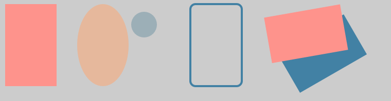

2.2 SkCanvas
Table of Contents
2.2.1 SkCanvas概念
上一节我们æ��到，SkBitmapå�¯ä»¥åƒ�ä¸€å¼ ç”»å¸ƒä¸€æ ·ï¼Œä½œä¸ºå›¾åƒ�ç»˜åˆ¶çš„æ‰¿è½½ã€‚è¿™å¼ ç”»å¸ƒçš„æ‰€æœ‰æ“�作都需è¦�SkCanvasæ�¥å®Œæˆ�。SkCanvasæ��供了一个æ�„é€ å‡½æ•°ï¼Œå�¯ä»¥ç›´æ�¥ä»�SkBitmapæ�„é€ ã€‚
explicit SkCanvas(const SkBitmap& bitmap);
通过上é�¢æ�„é€ å‡ºæ�¥SkCanvas对象å��，所有对äº�SkCanvas对象的æ“�作都作用在SkBitmapè¿™å¼ ç”»å¸ƒä¸Šã€‚
对äº�我们的界é�¢å¼•æ“�æ�¥è¯´ï¼ŒSkCanvaså’ŒSkBitmap是最é‡�è¦�的对象，SkCanvas负责将å�„ç§�ç•Œé�¢å…ƒç´ 绘制到SkBitmap上，最å��å†�å°†SkBitmap展示出æ�¥ã€‚
LRESULT OnPaint(UINT nMsg, WPARAM wParam, LPARAM lParam, BOOL &bHandled) {
PAINTSTRUCT ps;
HDC hdc = BeginPaint(&ps);
SkBitmap bitmap;
bitmap.allocN32Pixels(760, 200);
SkCanvas canvas(bitmap);
// Draw with canvas
BITMAPINFO bmi;
memset(&bmi, 0, sizeof(bmi));
bmi.bmiHeader.biSize = sizeof(BITMAPINFOHEADER);
bmi.bmiHeader.biWidth = bitmap.width();
bmi.bmiHeader.biHeight = -bitmap.height();
bmi.bmiHeader.biPlanes = 1;
bmi.bmiHeader.biBitCount = 32;
bmi.bmiHeader.biCompression = BI_RGB;
bmi.bmiHeader.biSizeImage = 0;
bitmap.lockPixels();
int ret = SetDIBitsToDevice(hdc,
60, 30,
bitmap.width(), bitmap.height(),
0, 0,
0, bitmap.height(),
bitmap.getPixels(),
&bmi,
DIB_RGB_COLORS);
(void)ret; // we're ignoring potential failures for now.
bitmap.unlockPixels();
EndPaint(&ps);
bHandled = TRUE;
return 0;
}
上é�¢çš„代ç �，先创建了一个760*200çš„SkBitmap，这个bitmapæ˜¯ä¸€å¼ å�ªå¸¦æœ‰å®½åº¦å’Œé«˜åº¦ä¿¡æ�¯çš„空画布。然å��ä»�bitmapæ�„é€ ä¸€ä¸ªSkCanvas canvas，æ�¥ç�€å°±å�¯ä»¥åœ¨è¿™ä¸ªcanvas上进行å�„ç§�绘图æ“�作。
2.2.2 SkCanvas基础
设置背景为浅�
canvas->drawColor(SK_ColorLTGRAY);
绘制矩形
SkPaint paint; paint.setStyle(SkPaint::kFill_Style); paint.setStrokeWidth(4); paint.setColor(0xffFE938C); SkRect rect = SkRect::MakeXYWH(10, 10, 100, 160); canvas->drawRect(rect, paint);
绘制圆
paint.setColor(0xff9CAFB7); canvas->drawCircle(280, 50, 25, paint);
绘制圆角矩形
paint.setColor(0xff4281A4); canvas->drawRoundRect(rect, 10, 10, paint);
旋转
canvas->rotate(60); rect = SkRect::MakeXYWH(0, 60, 90, 150); paint.setColor(0xff4281A4); canvas->drawRect(rect, paint); canvas->rotate(SkIntToScalar(20)); paint.setColor(0xffFE938C); canvas->drawRect(rect, paint);
